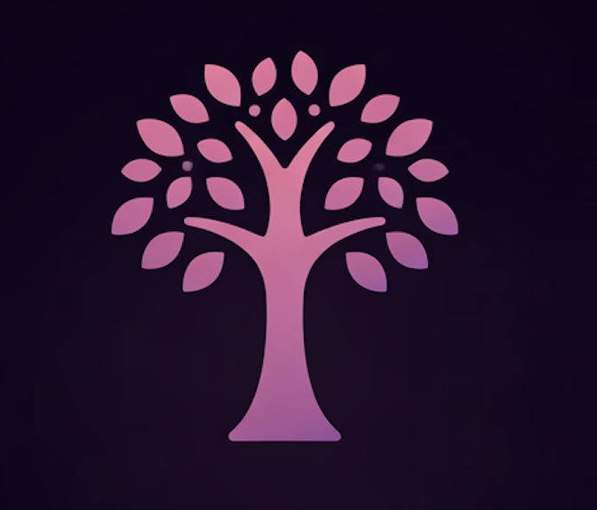
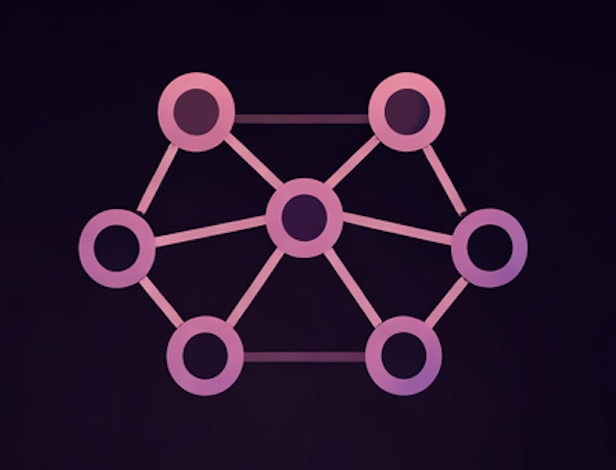
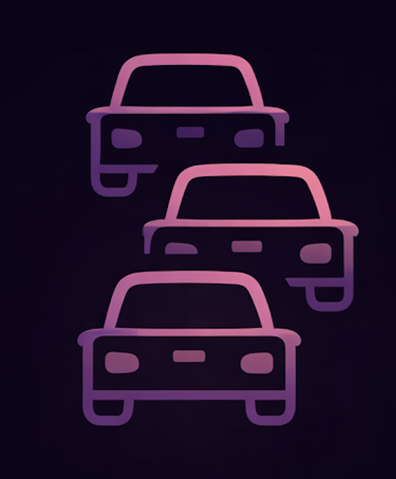

hi, i'm srishti singh.
a computer science student at the university of washington who loves building tools that have a meaningful impact.
Seattle, WA
building thoughtful software + ML systems
about
👩💻 who am i? 👩💻
hi! i’m srishti singh 🌟, a computer science student at the university of washington 🎓 majoring in computer science and minoring in business administration.
right now i’m especially excited by backend systems, machine learning, and human-robot interaction. i’m an undergraduate researcher in the human-centered robotics lab, where i work on shared autonomy with stretch and design natural language-based robot assistance 🤖.
most recently, i interned at uber, where i worked on loyalty infrastructure for driver discounts and rewards 🚗. i also work as a campus partner for perplexity and previously interned at quadrant technologies, where i led front-end development for vamsa 🪔.
i like building systems that are useful, rigorous, and easy to use, whether that means production backend workflows, full-stack student tools, or ml projects built from scratch 💡. i also care a lot about teaching and mentorship, which is why ta work and mentoring younger students have both been a big part of my path 👩🏫.
check out my work on github, feel free to email me at ssingh48@uw.edu, and connect with me on linkedin.
skills + tools
Python
Java
C++
C#
TypeScript
SQL
HTML
CSS
JavaScript
React
ROS
Flask
Express.js
AWS EC2
Azure DevOps
Docker
Linux
PyTorch
OAuth
REST APIs
PostgreSQL
Azure SQL
timeline
💡 my academic journey 💡
teaching assistant for computer security
teach weekly sessions, labs, and office hours on binary exploitation, memory corruption, web vulnerabilities, cryptography, buffer overflows, format strings, and heap exploits.
undergraduate researcher
conduct research on shared autonomy with the stretch assistive robot using ros, rviz, and web interfaces to explore language-based corrections and confidence-driven assistance.
campus partner at perplexity
spearheaded launch efforts for perplexity's comet browser on campus through training, onboarding, and feedback loops that increased adoption.
software engineering internship at uber
led migration of driver rewards functionality into the loyalty service, improving service ownership and reducing cross-team dependencies.
designed and implemented backend workflows for driver discounts, integrating upside apis and internal services for eligibility, location validation, payment linking, and redemption in production.
created an alumni database
worked with the tech committee in phi chi theta to build out a full-stack alumni database that helps current members stay connected with past graduates.
finished the com2 podcast series
wrapped up the podcast season with episodes featuring professors from the allen school - it was so rewarding to see the full series come together on spotify.
began my term as vp of phi chi theta
created our first tech committee and started mentoring two amazing students (my littles!) - so proud to support them.
launched the com2 podcast
interviewed 3 professors in the paul allen school and got our episodes up on spotify.
organized a ta panel
brought together current tas to give insight and advice to students interested in becoming a ta.
elected as vp of phi chi theta
took on a bigger leadership role in my business organization, excited to help our chapter grow.
presented musicmatch to cseed cohort 1
had the chance to share my project and journey to the incoming cseed cohort, helping inspire the next wave of innovators!
internship at quadrant technologies
led front-end development for vamsa, a production web and ios app using react native, and built ci/cd pipelines with azure devops while collaborating cross-functionally to reduce delivery timelines.
ai courses through ibm
took multiple ai courses focusing on building advanced generative ai applications and chatbots with python and flask.
ai engineering workshop
worked with openai fine-tuning and ai workflows through an intensive ai engineering workshop.
created an emotion detector
developed and deployed an app using watson nlp and flask to analyze text feedback into six distinct emotions.
became an officer of com squared
took on a leadership role and organized career talks and networking events, helping fellow students in the allen school of cs.
got into phi chi theta
joined this amazing business fraternity, diving into professional development and making connections with incredible people!
part of cseed cohort 0
created musicmatch, an app that connects people based on their music taste. used python, html, css, and javascript, spotify apis, and even managed it on aws ec2.
inrix + aws hackathon
earned an honorary mention for the ai-powered system for optimizing speed limits and congestion project.
projects
things i've built

Vamsa
Production web and iOS product work with React Native and release pipeline ownership.
Led front-end development for a production web and iOS app at Quadrant Technologies using React Native, and built Azure DevOps CI/CD pipelines to ship features faster across teams.

Neural Networks & Kernel Methods
From-scratch ML implementations focused on the core math, optimization, and training loops.
Built neural networks and optimization algorithms from scratch, including forward and backpropagation, sgd, logistic regression, lasso, and kernel regression.

INRIX + AWS Hackathon
A 24-hour traffic intelligence build that turned mobility data into fast ML predictions.
Built an ai-powered traffic prediction system in 24 hours using neural networks and the segmentspeed inrix api, earning an honorary mention among 300+ participants.
Socket Programming Protocol
A low-level networking project implementing reliable communication across custom UDP and TCP stages.
Built a socket-based client and multithreaded server that implemented a strict multi-stage protocol with custom packet headers, retransmissions, acknowledgments, padding rules, timeouts, and both UDP and TCP communication.
Music Match
A social matching app that uses listening data to connect people through music taste.
Built a web application that matches people based on music taste, deployed on aws ec2 with linux and apache, with spotify oauth integration for listening data.
Emotion Detector
An NLP workflow that turns open-ended feedback into structured emotional signals.
Built and deployed a watson nlp and flask application that classifies text feedback into six emotions with prompt engineering, error handling, and static analysis.
off the clock
outside of work
when i'm not coding
- 🏊♀️ swimming, lifeguarding, and swim instructing
- 📺 watching my favorite tv show Friends
- 📚 reading psychological thrillers (freida mcfadden)
- 💪 going to the gym
- ☕ drinking coffee
what i like most
i am happiest when i get to combine technical depth, product thinking, and people-focused impact, which is probably why research, backend systems, mentorship, and teaching all keep pulling me in.